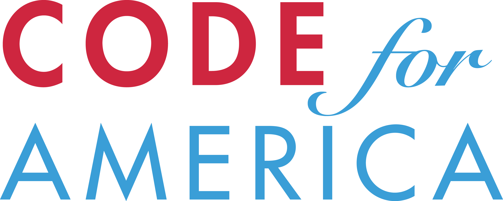

 +
Code for America helps American cities
use web technology to do a better job
of providing services to citizens.
Ruthie BenDor
2012 Fellow at Code for America
ruthie@codeforamerica.org
twitter: @unruthless
Entrepreneurship and small business development
are vital
to creating the jobs and economic activity
that define dynamic cities.
Opening a new business in any city
requires coordination
between many different departments.
(Everything from submitting building plans and applications to securing health permits!)
This presents a
cost-prohibitive
and confusing
hurdle to fledgling ventures.
I want to focus on growing my business, not on compliance.
Zoning Map: Check a site's zoning and prior use.
SiteMy.Biz: Find available commercial space.
Fee Calculators: TIFs, PDFs, business license taxes, oh my
Launch early August
Online document submission and payment
TRAKiT integration
Generalizing codebase for use with other cities